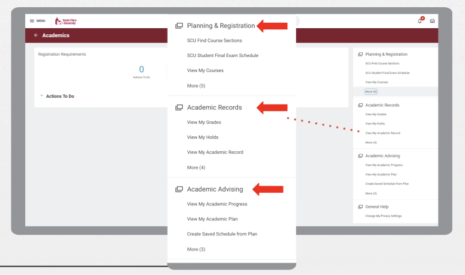
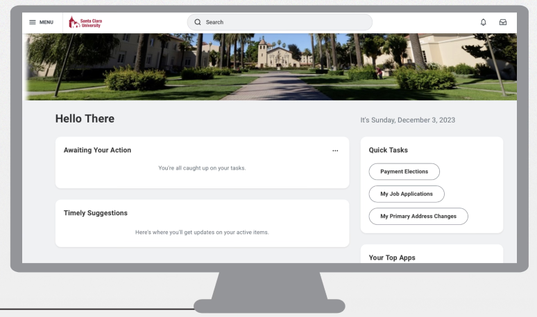
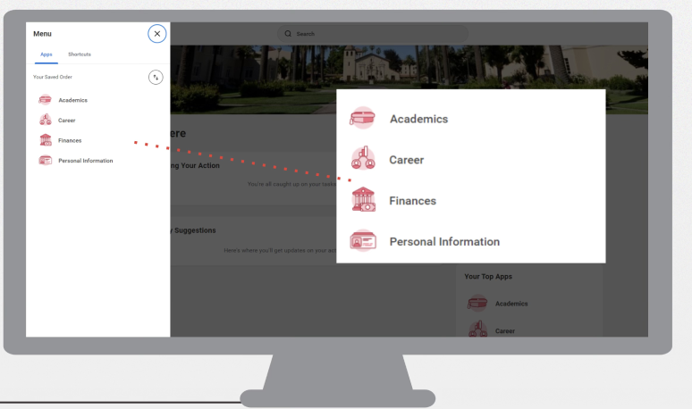
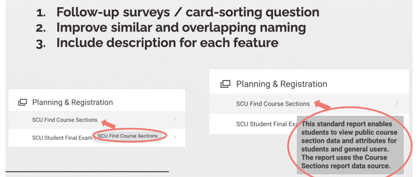
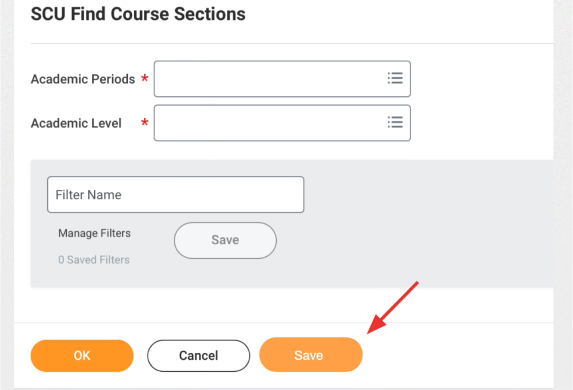
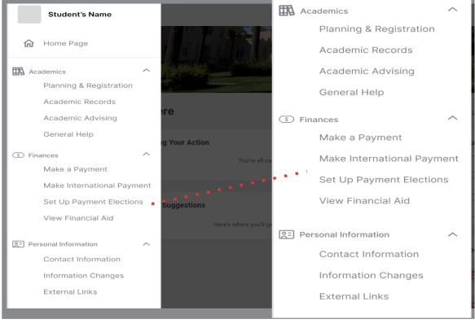
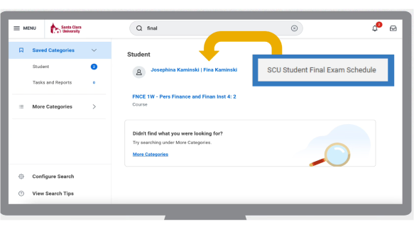
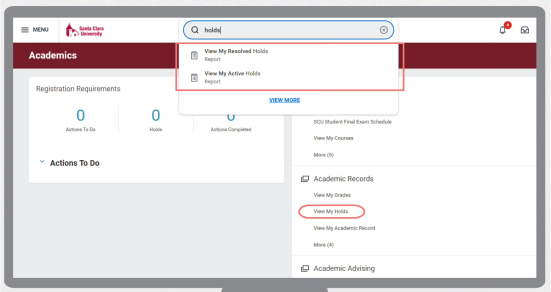

9 student interviews
Understand where students got stuck and how they described the experience.
Santa Clara University · Course-based team project
A mixed-methods study that turned a long list of student frustrations into focused navigation and search recommendations.

What changed
The university engineering team adopted our recommendations, fixed some search issues, and continued improving the student portal’s navigation.
01 / The stakes
Finding a course should not require students to decode the university’s software.
SCU had recently launched Workday as its academic platform. Students described confusing categories, repeated steps, and search results that did not match what they were looking for. In the task flow we documented, adding courses to a plan required 10 clicks.


02 / The turning point
The interviews surfaced so many issues that choosing a focus became a challenge. After discussing the scope with our professor, we organized the pain points on sticky notes and grouped them into themes.
Navigation emerged as the common thread. Vague names, repeated steps, and poor search were different ways the same experience broke down: students could not easily get to what they needed.
What we heard
The newly launched platform generated complaints across multiple tasks.
Research judgment
We used thematic coding and affinity mapping to find the largest, most consistent problem area.
Where we focused
Prioritize navigation and search rather than a broad redesign of every feature.
03 / Evidence into action
Evidence: students could not reliably interpret categories and subcategories. Recommendation: distinguish overlapping names, add short descriptions, and use follow-up card sorting to test how students would group the content.
Evidence: students repeatedly moved through pages and selected academic periods or levels. Recommendation: preserve those choices with a “save progress” feature and make the sidebar collapsible for faster access.
Evidence: searches returned irrelevant results. Recommendation: improve relevance and align autocomplete suggestions with the platform’s existing subcategories.

Adopted
The university engineering team used our recommendations, fixed some search issues, and continued refining navigation.
Proposed improvements
Save progress, a collapsible sidebar, and follow-up card sorting were recommendations—not all are documented as implemented.




04 / Behind the research
Understand where students got stuck and how they described the experience.
Add a quantitative view of the pain points across a wider student sample.
Bring the evidence together in Qualtrics and Google Sheets / Excel, then focus the recommendations.
This was a course-based team project, conducted from September to December 2023. The study focused on the student experience; staff perspectives were outside its scope.
Card sorting was a proposed follow-up, not a completed method. Workday also changed during the project, including an additional registration-requirements area, so the platform was a moving research context.
05 / What I learned
The most valuable move was narrowing a long list of complaints to a problem the university team could act on. That required synthesis and scope judgment as much as data collection.
If I revisited the project, I would run card sorting with students before proposing a new information structure, include staff users, and evaluate the updated task flows. Those steps would help separate improvements in findability from changes elsewhere in the platform.
A good conversation is a good start
I’m exploring UX research opportunities, and related roles in product insights, customer experience, and strategy.